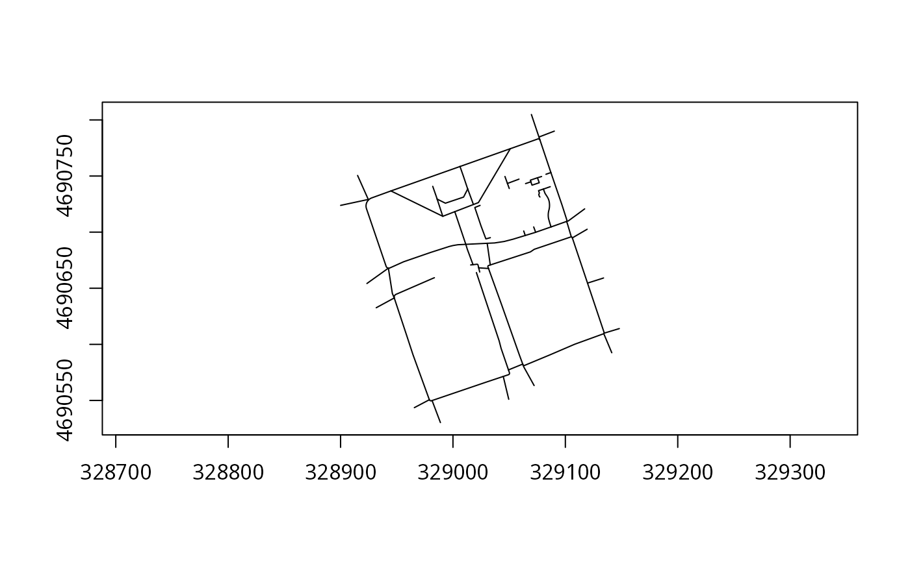

A SpatialLinesDataFrame object representing sidewalks in Central Boston.
boston_sidewalkA SpatialLinesDataFrame with 78 features.
boston_sidewalk
#> geometry OBJECTID TYPE ShapeSTLen
#> 881 MULTILINESTRING((329076.5 4690785 ...)) 882 CWALK-CL 69.467086
#> 946 MULTILINESTRING((329062.3 4690582 ...)) 947 CWALK-CL 68.613752
#> 1007 MULTILINESTRING((329031.6 4690668 ...)) 1008 CWALK-CL 28.761259
#> 1014 MULTILINESTRING((328942.5 4690668 ...)) 1015 CWALK-CL 77.065931
#> 1021 MULTILINESTRING((329017.9 4690671 ...)) 1022 CWALK-CL 63.114139
#> 1173 MULTILINESTRING((329106.2 4690695 ...)) 1174 CWALK-CL 50.097519
#> 1481 MULTILINESTRING((328924.7 4690729 ...)) 1482 CWALK-CL 76.735195
#> 1491 MULTILINESTRING((329049.6 4690551 ...)) 1492 CWALK-CL 68.645163
#> 1492 MULTILINESTRING((329030.4 4690690 ...)) 1493 CWALK-CL 63.991669
#> 1493 MULTILINESTRING((329049.4 4690577 ...)) 1494 CWALK-CL 44.986748
#> 1494 MULTILINESTRING((328981.4 4690550 ...)) 1495 CWALK-CL 68.899873
#> 1510 MULTILINESTRING((328979 4690551 ...)) 1511 CWALK-CL 49.543893
#> 1525 MULTILINESTRING((328924.7 4690729 ...)) 1526 CWALK-CL 82.652350
#> 1731 MULTILINESTRING((329141.3 4690593 ...)) 1732 CWALK-CL 60.545796
#> 1782 MULTILINESTRING((329148 4690614 ...)) 1783 CWALK-CL 46.358192
#> 1867 MULTILINESTRING((329090.2 4690790 ...)) 1868 CWALK-CL 48.040378
#> 1906 MULTILINESTRING((329077.4 4690782 ...)) 1907 CWALK-CL 9.331288
#> 1909 MULTILINESTRING((329134 4690659 ...)) 1910 CWALK-CL 49.123780
#> 2420 MULTILINESTRING((329101.1 4690710 ...)) 2421 CWALK-CL 64.506860
#> 20156 MULTILINESTRING((328947.8 4690641 ...)) 20157 SWALK-CL 134.869814
#> 22980 MULTILINESTRING((329033.2 4690671 ...)) 22981 SWALK-CL 250.927850
#> 27196 MULTILINESTRING((329080.5 4690738 ...)) 27197 PWALK-CL 116.243099
#> 27276 MULTILINESTRING((328985.9 4690729 ...)) 27277 PWALK-CL 39.536081
#> 27277 MULTILINESTRING((329013.1 4690738 ...)) 27278 PWALK-CL 69.452660
#> 27333 MULTILINESTRING((329080.5 4690738 ...)) 27334 PWALK-CL 21.131651
#> 27494 MULTILINESTRING((329051 4690774 ...)) 27495 PWALK-CL 198.597070
#> 27506 MULTILINESTRING((329075.2 4690748 ...)) 27507 PWALK-CL 48.146341
#> 27507 MULTILINESTRING((329069.3 4690745 ...)) 27508 PWALK-CL 26.883227
#> 27508 MULTILINESTRING((329077.4 4690731 ...)) 27509 PWALK-CL 35.247278
#> 27759 MULTILINESTRING((328985.9 4690729 ...)) 27760 PWALK-CL 109.438792
#> 27941 MULTILINESTRING((329024.1 4690724 ...)) 27942 PWALK-CL 127.466797
#> 41993 MULTILINESTRING((328924.7 4690729 ...)) 41994 CWALK-CL 1.602993
#> 58626 MULTILINESTRING((329046.3 4690750 ...)) 58627 PWALK-CL 21.628437
#> 58627 MULTILINESTRING((329018.2 4690725 ...)) 58628 PWALK-CL 48.383360
#> 58629 MULTILINESTRING((328990.9 4690714 ...)) 58630 PWALK-CL 52.861591
#> 58630 MULTILINESTRING((329001.6 4690718 ...)) 58631 PWALK-CL 37.558490
#> 58631 MULTILINESTRING((329018.2 4690725 ...)) 58632 PWALK-CL 58.299653
#> 58679 MULTILINESTRING((329011.4 4690689 ...)) 58680 PWALK-CL 100.775306
#> 58776 MULTILINESTRING((329064.3 4690697 ...)) 58777 PWALK-CL 13.872812
#> 58777 MULTILINESTRING((329048.5 4690743 ...)) 58778 PWALK-CL 15.731534
#> 58778 MULTILINESTRING((329048.5 4690743 ...)) 58779 PWALK-CL 35.991056
#> 58779 MULTILINESTRING((329064.6 4690743 ...)) 58780 PWALK-CL 16.463951
#> 58886 MULTILINESTRING((329075.2 4690748 ...)) 58887 PWALK-CL 12.663525
#> 59228 MULTILINESTRING((329071.8 4690705 ...)) 59229 PWALK-CL 16.649053
#> 59229 MULTILINESTRING((329082.7 4690752 ...)) 59230 PWALK-CL 15.291535
#> 60721 MULTILINESTRING((328990.9 4690714 ...)) 60722 PWALK-CL 168.510032
#> 72509 MULTILINESTRING((329022.9 4690668 ...)) 72510 SWALK-CL 12.665236
#> 72540 MULTILINESTRING((329051 4690774 ...)) 72541 SWALK-CL 93.024597
#> 99695 MULTILINESTRING((329077.4 4690782 ...)) 99696 SWALK-CL 100.256849
#> 99696 MULTILINESTRING((329087.1 4690753 ...)) 99697 SWALK-CL 150.598600
#> 99697 MULTILINESTRING((329101.1 4690710 ...)) 99698 SWALK-CL 48.311928
#> 99698 MULTILINESTRING((329087.3 4690705 ...)) 99699 SWALK-CL 47.539372
#> 99699 MULTILINESTRING((329073.6 4690700 ...)) 99700 SWALK-CL 31.775550
#> 99700 MULTILINESTRING((329064.3 4690697 ...)) 99701 SWALK-CL 113.952743
#> 99701 MULTILINESTRING((329030.4 4690690 ...)) 99702 SWALK-CL 62.449454
#> 99702 MULTILINESTRING((329011.4 4690689 ...)) 99703 SWALK-CL 237.864629
#> 99703 MULTILINESTRING((328942.5 4690668 ...)) 99704 SWALK-CL 214.547823
#> 99704 MULTILINESTRING((328924.9 4690729 ...)) 99705 SWALK-CL 70.906641
#> 99705 MULTILINESTRING((328944.8 4690737 ...)) 99706 SWALK-CL 213.874487
#> 99706 MULTILINESTRING((329006.3 4690758 ...)) 99707 SWALK-CL 155.762990
#> 99790 MULTILINESTRING((329015.7 4690671 ...)) 99791 SWALK-CL 7.004859
#> 99791 MULTILINESTRING((329017.9 4690671 ...)) 99792 SWALK-CL 24.148629
#> 100130 MULTILINESTRING((329105.3 4690696 ...)) 100131 SWALK-CL 4.547641
#> 100131 MULTILINESTRING((329106.2 4690695 ...)) 100132 SWALK-CL 139.447066
#> 100132 MULTILINESTRING((329119.7 4690655 ...)) 100133 SWALK-CL 154.306465
#> 100133 MULTILINESTRING((329134.5 4690610 ...)) 100134 SWALK-CL 1.757334
#> 100134 MULTILINESTRING((329134.2 4690610 ...)) 100135 SWALK-CL 254.641161
#> 100135 MULTILINESTRING((329062.3 4690582 ...)) 100136 SWALK-CL 2.494029
#> 100136 MULTILINESTRING((329062.1 4690582 ...)) 100137 SWALK-CL 296.779769
#> 100137 MULTILINESTRING((329031.6 4690668 ...)) 100138 SWALK-CL 15.182599
#> 100886 MULTILINESTRING((329020.9 4690664 ...)) 100887 SWALK-CL 299.633488
#> 100887 MULTILINESTRING((329049.4 4690577 ...)) 100888 SWALK-CL 31.898539
#> 100888 MULTILINESTRING((329044.8 4690571 ...)) 100889 SWALK-CL 219.372779
#> 100889 MULTILINESTRING((328981.4 4690550 ...)) 100890 SWALK-CL 9.459059
#> 100890 MULTILINESTRING((328979 4690551 ...)) 100891 SWALK-CL 314.796525
#> 101375 MULTILINESTRING((329105.3 4690696 ...)) 101376 CWALK-CL 47.398512
#> 101385 MULTILINESTRING((328931.7 4690633 ...)) 101386 CWALK-CL 59.901567
#> 101386 MULTILINESTRING((328947.8 4690641 ...)) 101387 CWALK-CL 89.150766
plot(boston_sidewalk, axes = TRUE)
